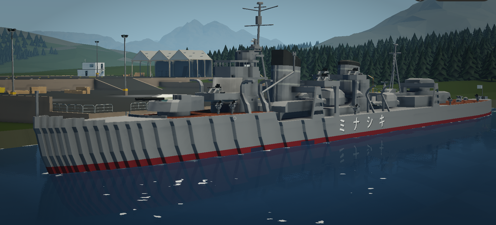

更新再開します
実に４か月ほど更新していませんでしたが、流石にまずいと思ったので更新します。
といってもこのサイトですることがないから更新してないんですよね。マジでこのサイトに役目が欲しい
取り合ず適当にまたSWだったり艦これだったりの独り言を流そうと思っております。
最近艦これの2-3で岸波が落ちるらしいんで、バケツ100個引っ提げて突っ込んだんすよ。
なんかバケツなくなっちゃった。なんで。
お願いだから岸波出てくれ。ついでに長姉も出てくれ。もう私のライフはゼロよ
あ、あとSWの動画上げようとしてます。もし上がったら見て。割と時間かけて作ってるから。
製作中の岸波。